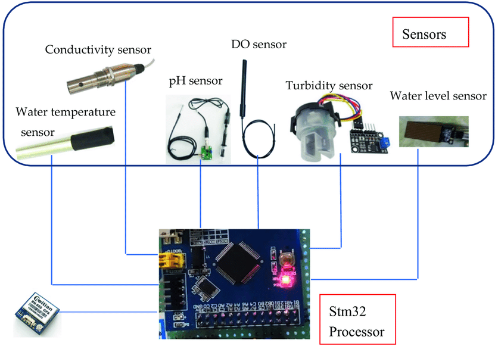
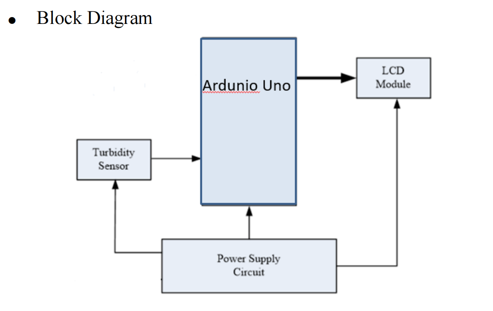

PBL Project
WATER QUALITY MONITORING SYSTEM
Prapti Bargir,Arihant Bhamare and Nikhil Kolhe
WATER QUALITY MONITORING SYSTEM
15
Water is an essential element for the survival of mankind. Its variety of uses means that it is always in a constant state of demand. The supply of water most primarily comes from large reservoirs of water such as lakes, streams, and the ocean itself. As such, it is good practice to monitor its quality to ensure it is fit for human consumption. Current water quality monitoring is often carried out in traditional labs but is time consuming and prone to inaccuracies. Therefore, this paper aims to investigate the feasibility of implementing an Arduino-based sensor system for water quality monitoring
A simple prototype consisting of an aurdino and turbidity sensor was employed to conduct weekly onsite tests at multiple daily intervals. It was found that the system works reliably but is reliant on human assistance and prone to data inaccuracies. The system however, provides a solid foundation for future expansion works of the same category to elevate the system to being Internet of Things (IoT) friendly.
Components Used

1. Arduino UNO
2. Breadboard
3. I2C Converter
4. Jumper Wire
5. 16x2 LCD Display
Conclusion

CASE 1:
When water is clear, maximum amount of light transmitted from the
transmitter end of the turbidity sensor will reach the receiver end. This leads to
large value of analog reading resulting in decrease of the mapped voltage
value. Hence it displays that the water is clear.
CASE2:
When water is cloudy, average amount of light transmitted from the
transmitter end of the turbidity sensor will reach the receiver end. This leads to
average value of analog reading resulting in medium mapped voltage value.
Hence it displays that the water is cloudy.
CASE3:
When water is dirty, minimum amount of light transmitted from the
transmitter end of the turbidity sensor will reach the receiver end. This leads to
small value of analog reading resulting in incease of the mapped voltage
value. Hence it displays that the water is dirty.
This Project was made by:
1.Prapti Bargir
2.Arihant Bhamare
3.Nikhil Kolhe